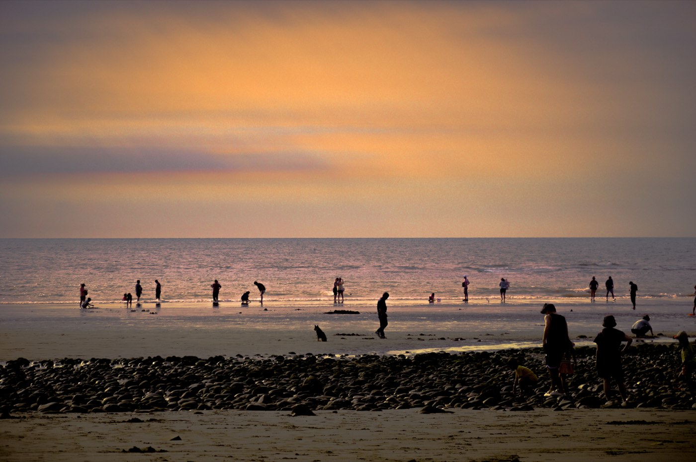
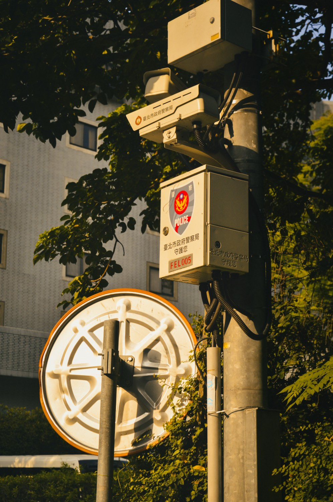
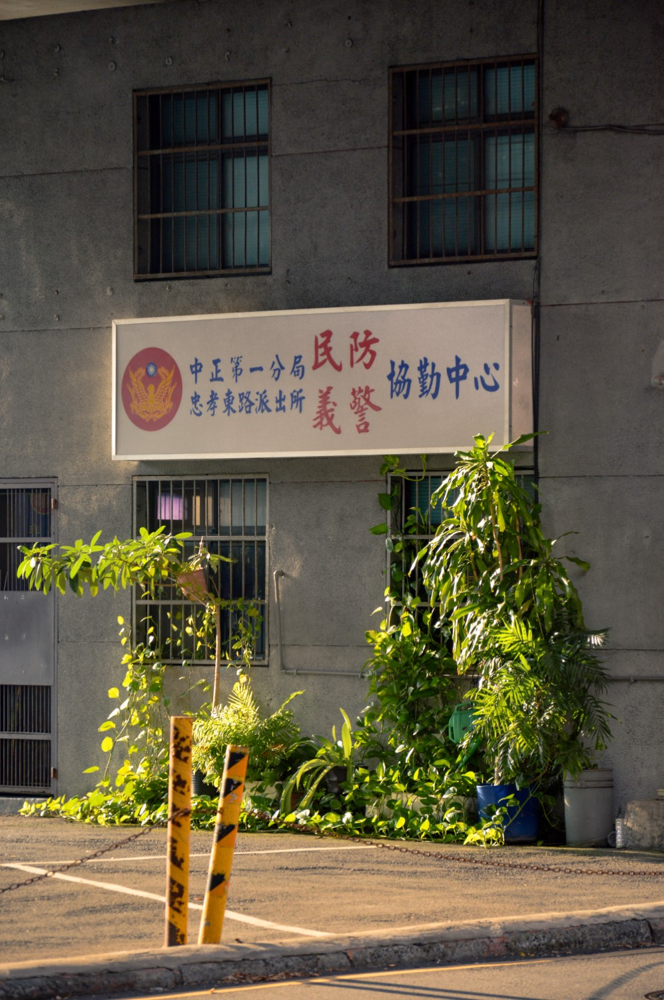
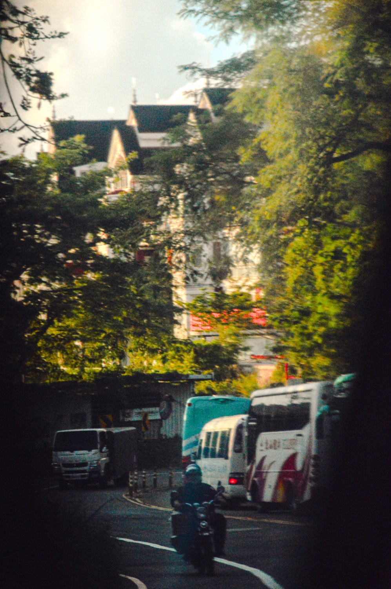
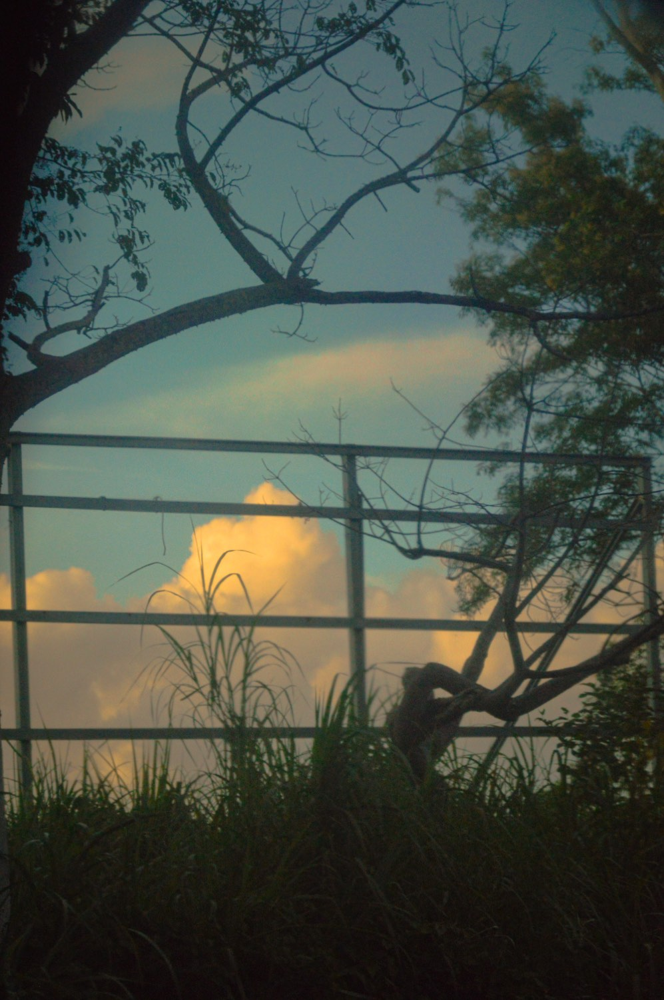
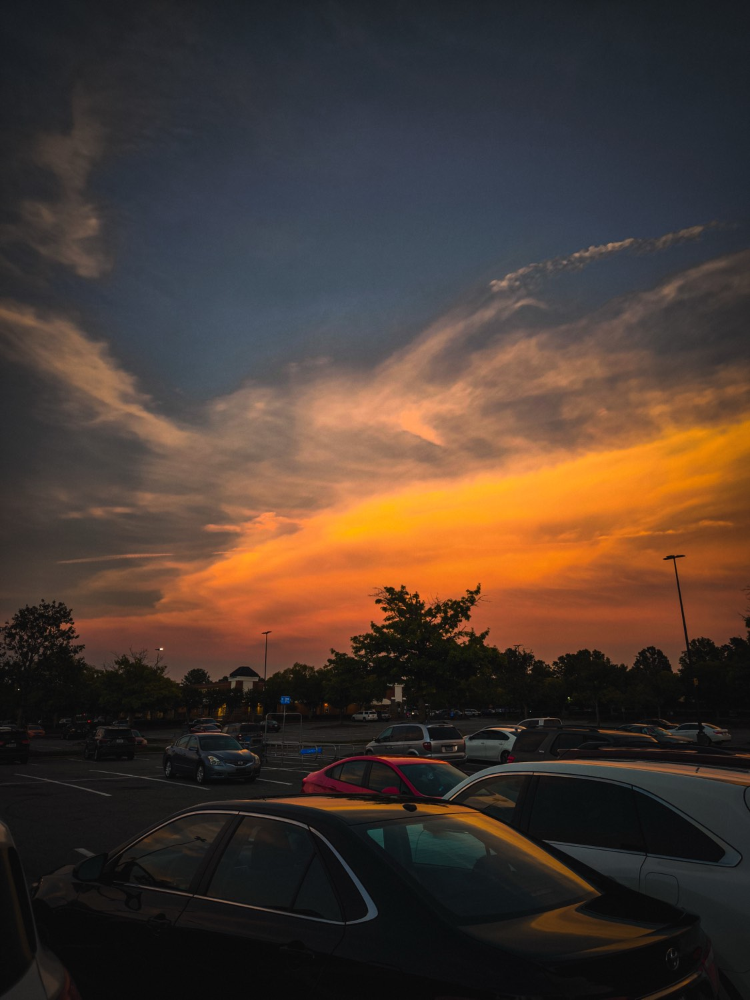
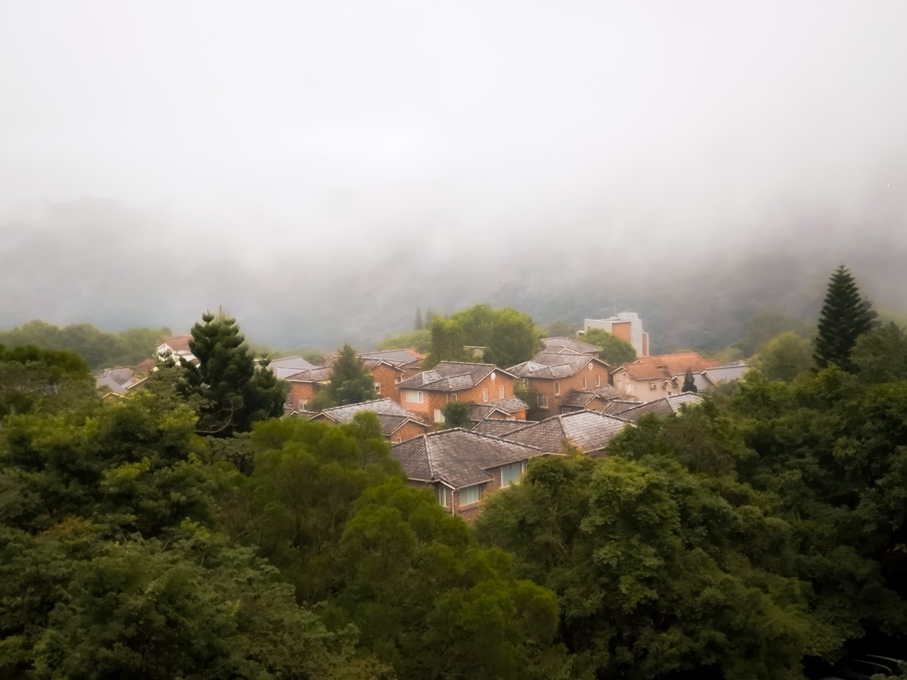
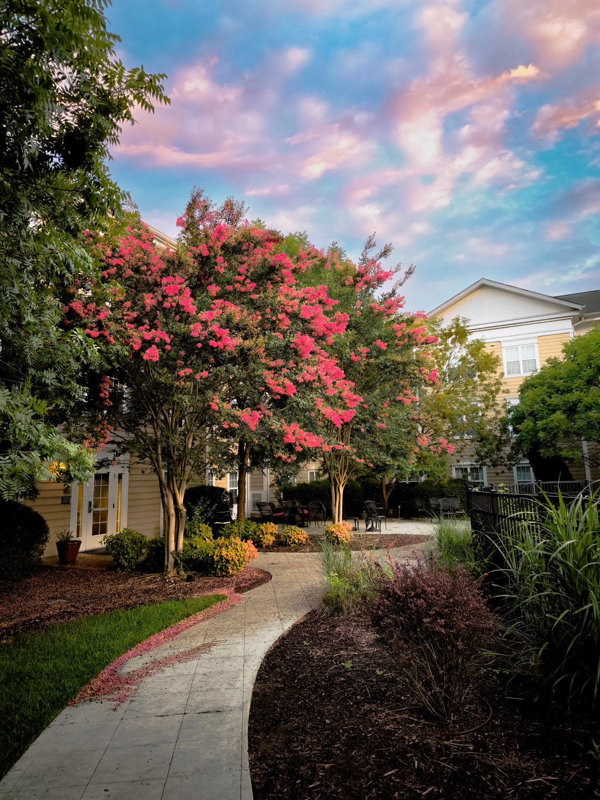

Virtual Learning & Development
Semester 1 · 2026–27
Learning to see.
Sixteen Tuesdays, one photography tip at a time: what I studied, what I shot, and what I learned.
Scroll
01
The course
My VLD course is photography. Each week I study one tip from Photography Life, test it with a photo, and write an honest reflection.
Loading…
02
Most recent session
Loading…
03The plan
04
Starting point
Where I'm starting from.
Photos taken before the course — my starting point.







